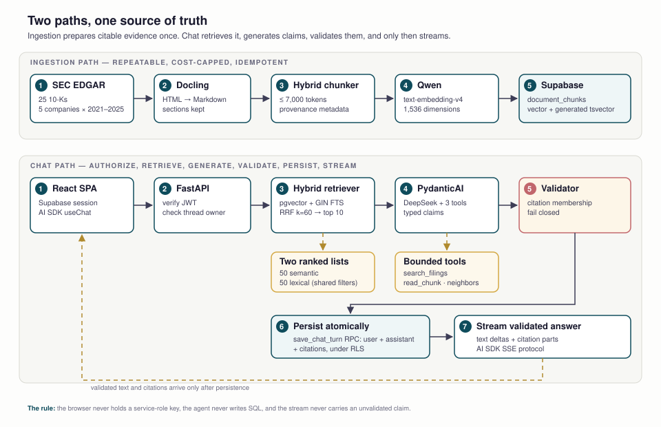

Project: Supabase + RAG + AI Coding — A Grounded Filing Analyst
This is the capstone, and it is deliberately not a tour of a new framework. It is one product built the way the course says to build: a client brief with a trust contract, a schema that enforces it, retrieval you can inspect, an agent whose claims are validated before a single token reaches the user, and a phased checklist with a gate on every phase. The example repository is a working implementation through Phase 7. The more important property is that it knows when to refuse.
Part 1 — Write todo.md before the code
The capstone repository already contains the artifact that Lesson 15's stage 3 asks you to produce: a docs/todo.md that turns a brief and an architecture into an ordered build. That is not a detail. The checklist is what keeps a long build from collapsing into a pile of plausible-looking files.
If you are starting from the brief instead of the finished example, the setup is the same as Lesson 15's Part 5: read the repo before you prompt. In the example that means AGENTS.md, README.md, docs/client-brief.md, docs/architecture.md, backend/AGENTS.md, frontend/AGENTS.md and data/README.md. You are looking for the stack that is locked, the commands that must work, the trust contract, and the parts that are deliberately empty.
The prompt
Ask for a plan, not code. This prompt goes through every document and forces the answer into three streams — backend, frontend and data — with a start order and a gate per item:
Go through every document in this repository: AGENTS.md, README.md,
docs/client-brief.md, docs/architecture.md, docs/guides/*, data/README.md,
backend/AGENTS.md and frontend/AGENTS.md. Then write docs/todo.md.
Give me an ordered checklist to implement the architecture and satisfy the
client brief. Split the work into backend, frontend and data, and tell me
which stream starts first and why. For every item:
- name the files or modules it touches
- give a concrete acceptance check (a command, a response, or a test)
- say what it blocks
- label it implementation, verification, or deployment
Do not write application code yet. Do not mark an item complete until its
acceptance check has actually run.That is the Lesson 15 prompt extended for a multi-service repo. The extra constraints matter: "backend, frontend and data" prevents a plan that forgets the corpus; "what it blocks" exposes the real critical path; "verification" keeps a finished feature separate from a proven one.
What a usable checklist looks like
The answer should not be a feature list. It should be a sequence of vertical slices with gates. A useful item names the change and the evidence:
| weak item | usable item |
|---|---|
| Build the RAG pipeline. | Add pgvector semantic search with ticker, fiscal-year and form filters. Touches retrieval/queries.py, retrieval/retriever.py and tests/retrieval/. Acceptance: a seeded query returns 10 ranked chunks, and the filter test rejects a mismatched ticker. Blocks the agent tools. |
| Add citations. | Validate claim citations against the passages registered in the current run. Touches grounding/validator.py, assistant/outputs.py and tests/grounding/. Acceptance: an unknown chunk ID raises GroundingError, and no answer is persisted or streamed. Blocks the trust UI. |
| Deploy it. | Run the audited GOOGL ingestion against the target database and verify 53 chunks. Acceptance: the row count matches and a spot-check citation resolves. Blocks the pilot smoke test. |
The example's docs/todo.md is the result: phase 0 through phase 9, checkboxes, explicit open gates, and a quick-reference table. Notice what it does not do — it does not pretend the corpus is complete, and it does not confuse a checked box with a verified one.
Keep the plan in the repo
Put the answer in docs/todo.md, not in the chat. The agent reads it at the start of every session; you edit it when reality changes; the diff is the project's memory. A plan that lives only in a conversation gets re-derived — and quietly changed — at the next prompt.
Part 2 — Two paths, one source of truth

There are two paths, and they have different failure budgets:
- Ingestion is offline, repeatable and cost-capped. A bad run can be re-run; it must never silently overwrite cited evidence.
- Chat is online, authenticated and fail-closed. A bad answer cannot be un-said, so validation happens before the first successful stream event.
| layer | choice in this project |
|---|---|
| backend | Python 3.12, FastAPI, Pydantic v2, SQLAlchemy, Alembic |
| frontend | Vite + React + TypeScript, Tailwind, shadcn/ui, Vercel AI SDK useChat |
| database | Supabase Postgres with pgvector and generated tsvector |
| auth | Supabase Auth (email), bearer token verified by FastAPI |
| LLM | DeepSeek deepseek-chat, orchestrated by PydanticAI |
| embeddings | Qwen text-embedding-v4, 1,536 dimensions, via DashScope |
| deployment target | Deploy two services to cloud; hosted Supabase for state |
Read the dependency list carefully. The backend depends on the openai package, but the models are DeepSeek and Qwen. That SDK is being used as an OpenAI-compatible wire client: PydanticAI's OpenAIChatModel is pointed at https://api.deepseek.com/v1, and the Qwen embedder uses AsyncOpenAI with the DashScope base URL. The provider is not OpenAI. The package name is a transport detail; config.py and pyproject.toml are the source of truth for what actually runs.
Part 3 — Supabase and Alembic: schema as reviewed code
The build order in the project's docs/todo.md is intentional: foundation → backend vertical slices → frontend in parallel, never far ahead of working APIs. Foundation means two things here: a Supabase project that owns identity and state, and an Alembic history that owns the schema.
Supabase: identity plus durable state
Supabase is doing two jobs: it is the identity provider and it is the product database. That combination is why the project stays small — no separate auth service, no managed vector database, no cache to reconcile. It is also why key handling matters. The browser gets the anon key and a user session. FastAPI may hold the service-role key for privileged work that cannot run under the user's identity, but the chat path here deliberately uses the user's bearer token instead. The service-role key bypasses row-level security, so it never belongs in the frontend or in a convenience path.
Six tables carry the product:
| table | role |
|---|---|
users | profile row keyed to the Supabase authenticated user |
source_documents | filing identity, source URL, normalized Markdown, filing metadata |
document_chunks | retrieval text, vector(1536) embedding, generated tsvector, chunk metadata |
chat_threads | conversation metadata and owner |
chat_messages | ordered user and assistant turns |
message_citations | assistant message → chunk, stable citation index, optional exact quote |
RLS is enabled on all six. Ownership is expressed in the schema and enforced by Postgres: a user can read their own profile, threads, messages and citations, while the filing corpus is shared reference data guarded by read policies. FastAPI verifies the Supabase bearer token and then operates with the user's identity. The atomic save_chat_turn RPC runs as SECURITY INVOKER under that same authenticated session, so writing a turn cannot step outside the caller's RLS context.
Alembic: the schema's source of truth
The Supabase dashboard is not the source of truth. SQLAlchemy models describe the ordinary tables; Alembic migrations are the reviewed, ordered record of every change. Autogenerate produces a candidate, not a decision. The parts that make this schema work are written explicitly:
create extension if not exists vector;vector(1536)embedding columns;- a generated
tsvectorcolumn, so full-text search cannot drift from content; - HNSW for cosine vector search and GIN for full-text search;
- RLS enablement, policies, and the
save_chat_turnfunction.
The shape that matters in the initial migration:
create extension if not exists vector;
create table document_chunks (
id uuid primary key,
document_id uuid not null references source_documents(id),
chunk_index integer not null,
content text not null,
embedding vector(1536) not null,
search_vector tsvector generated always as
(to_tsvector('english', content)) stored,
token_count integer,
metadata jsonb not null default '{}'::jsonb
);
create index document_chunks_embedding_idx
on document_chunks using hnsw (embedding vector_cosine_ops);
create index document_chunks_search_idx
on document_chunks using gin (search_vector);Two details are easy to miss. First, search_vector is generated by the database, so full-text search cannot drift from the chunk text after an update. Second, the HNSW and GIN indexes are written explicitly rather than left to autogenerate — the same rule the backend's agent notes state.
Run migrations against a direct/session connection, not the transaction pooler. Extension creation, generated columns and index builds need session-level behavior, and a pooler can hide the transaction boundaries those operations rely on. The local workflow is:
cd backend
uv sync
uv run alembic revision --autogenerate -m "describe the change"
# read backend/alembic/versions/<revision>.py before applying it
uv run alembic upgrade head
uv run uvicorn app.main:app --reloadMigration discipline: one logical change per revision; review the generated SQL rather than trusting it; test on a disposable database before the target; the model change and its migration are committed together. Destructive operations — dropping a column, narrowing a type, adding NOT NULL without a backfill — need a backup or an explicit two-step migration. A downgrade that loses data is not a rollback plan.
Gate: GET /health returns 200, and a protected route returns 401 before any retrieval or model work begins. The schema must be applied before the stub stream can persist a turn, and authentication must be real before the stub stream means anything.
Part 4 — Phase 3: the thin vertical slice
Before RAG exists, the product already streams a stub answer through the real route. That phase is not throwaway work. It isolates the three things most likely to be broken later:
- a real Supabase session reaches FastAPI with a valid bearer token;
- the AI SDK message format survives the round trip;
- a completed turn is persisted, reloaded and restored in history.
The endpoints arrive first: create a thread, list threads, load history, then POST /chat/stream. The route uses the AI SDK UI message SSE protocol, persists the user and assistant messages after a successful stream, and rejects access to another user's thread. Only then does the real retriever replace the stub.
Why this order wins: if you wire the LLM first, a broken stream can be an auth bug, a protocol bug, a persistence bug or a model bug. The stub removes three of those variables. This is the AI-coding lesson's "smallest vertical slice that runs" applied to a full product.
Part 5 — Phase 4: make the corpus citable
Ingestion is a pipeline with a budget: download 25 filings, convert HTML to Markdown with Docling, chunk within the embedding model's context limit, embed with Qwen, and upsert into Supabase.
# from the repository root, using the backend's uv environment
uv run data/download.py
uv run --project backend python data/convert_to_markdown.py
uv run --project backend python data/ingest_source_documents.py
uv run --project backend python data/ingest_chunks.py
uv run --project backend python data/ingest_chunks.py \
--fiscal-year 2025 --pilot --ticker GOOGL --max-cost-cny 0.01
uv run --project backend python data/ingest_chunks.py \
--fiscal-year 2025 --all --ticker GOOGL --max-cost-cny 0.20The safeguards are the lesson. The chunk job is a dry run by default. A real embedding run requires an explicit --all or --pilot plus a required cost cap checked before any API request. The one-chunk pilot is a gate, not a formality: it proves the embedding dimensions, the generated full-text vector and the database write before you spend on the corpus. Batches are capped at 10; chunks are capped at 7,000 tokens, below the model's 8,192-token per-input limit; embeddings are 1,536 dimensions, matching the column.
The recorded GOOGL fiscal-2025 dry run is concrete: 53 chunks, 309,229 estimated input tokens, CNY 0.1589. That is the kind of number a build should produce before it produces an answer.
Idempotency has a trust dimension. Re-running the job skips matching chunks, re-embeds changed uncited chunks at the same index, protects cited rows from overwrite, and removes stale uncited chunks only after a successful full run. Cited evidence is not silently replaced by a later ingestion.
The open gate: the latest GOOGL dry run could not map any of its 53 chunks back to source offsets, after both exact and normalized matching. Those offsets remain null. The product therefore cites section and page references when they exist, and never invents a page number when they do not. The citation contract is honest about a real limitation instead of hiding it behind a confident UI.
Coverage honesty: only the GOOGL fiscal-2025 filing is ingested. The other four companies are explicitly outside current retrieval scope. Most of the client brief's ten questions are multi-company or multi-year, so they cannot pass an evidence test yet. This is a corpus-coverage gap, not an agent-quality verdict, and the two must be reported separately.
Part 6 — Phase 5: hybrid retrieval, bounded and fused
A single embedding search is good at paraphrase and bad at exact terms: ticker symbols, "Item 7", "10-K", a specific year. A single keyword search is the reverse. The retriever runs both and fuses the rankings:
- Embed the query with Qwen
text-embedding-v4(1,536 dimensions) and validate the response shape and finite values. - Run a bounded
pgvectorcosine search overdocument_chunks.embedding, with shared ticker, fiscal-year and form filters. - Run Postgres full-text search over the generated
search_vectorwith the same filters. - Fuse the two ranked lists deterministically with Reciprocal Rank Fusion.
- Hydrate the selected chunks and fetch at most one neighboring chunk on each side, in the same filing.
The RRF score for a chunk is a sum over the lists that returned it:
score = Σ 1 / (k + rank) k = 60RRF uses only ranks, not raw scores, so a cosine distance and a ts_rank value never have to be normalized against each other. The implementation takes 50 candidates per branch, keeps 10 final results, and allows a neighbor window of 1. Those constants are not decoration: they bound latency, bound how much text can enter the prompt, and bound what an injected document can attempt to influence.
The agent never writes SQL. It gets typed search tools with bounded filters, not a database connection. Retrieval stays a deterministic service that can be tested without an LLM. The open gate is the client-brief retrieval check: because only GOOGL 2025 is present, questions requiring other companies or years are blocked on corpus coverage, not on ranking.
Part 7 — Phase 6: the grounded agent
PydanticAI owns the model boundary. The agent is configured with DeepSeek through an OpenAI-compatible provider, receives typed dependencies, and is allowed exactly three tools:
| tool | what it may do |
|---|---|
search_filings | search with optional ticker, fiscal-year and filing-type filters |
read_chunk | read one retrieved chunk by ID |
read_surrounding_chunks | read a bounded same-filing neighbor window (maximum 1) |
No general SQL, no web search, no arbitrary URL fetch, no code execution. Each call is bounded: 8 agent requests, 12 tool calls, 4,000 output tokens. The tools register every passage they return in a per-run registry, because grounding validation needs to know what the model was actually allowed to see.
Generation returns claims, not a paragraph. The output contract is the trust contract:
class GroundedClaim(BaseModel):
text: str
citation_ids: list[UUID] = Field(min_length=1, max_length=5)
class GroundedAnswer(BaseModel):
claims: list[GroundedClaim] = Field(max_length=20)
insufficient_evidence: bool = FalseThe user-facing answer is rendered from validated claims and their citation markers. There is no separate free-form paragraph that could smuggle in an uncited assertion. The validator then enforces, deterministically:
- every factual claim has at least one citation;
- every chunk ID exists in the current run's passage registry;
- any supplied quote is an exact substring of its cited passage;
- citation metadata comes from the hydrated database row, not from the model;
- the answer stays within the claim, citation and length bounds;
- invalid output fails closed — nothing is persisted or streamed.
When evidence is insufficient, the system returns a fixed response: "The available filing evidence is not sufficient to answer this question reliably." It does not soften that into a guess, and it does not attach citations to a refusal.
Trust-first streaming: the full answer is generated, validated and persisted atomically through save_chat_turn before the first text delta is sent. That deliberately moves time-to-first-token later. The alternative — stream tokens as the model produces them, then discover the citations are invalid — exposes claims that cannot be retracted. Once the answer is durable, the serializer emits start, text-start, 64-character deltas, structured citation parts, text-end, finish and [DONE].
What this does not prove: referential validation confirms that every cited ID maps to a retrieved passage. It does not mathematically prove that the passage semantically entails the claim. That is why the project treats client-brief evaluation and human review as a separate gate, and why "the validator passed" is not the same sentence as "the answer is correct."
The fast backend suite currently reports 79 passing tests with no network and no database. It covers the tool allowlist, no-evidence refusal, citation membership, the history trust boundary, the RPC payload and stream ordering. Integration tests are marked separately because they need live Supabase, Qwen or DeepSeek access.
Part 8 — Phase 7: the trust UI
The UI's job is to make verification cheaper than doubt. Citation chips show company, filing, date and the known page or section. Selecting one opens a source panel with the exact cited excerpt and a link to the filing. Empty, loading, streaming, authentication, retrieval, grounding, provider and network states are distinct, because "something went wrong" is not an error message an analyst can act on.
Two rules keep the UI honest. First, page numbers are rendered only when the chunk metadata has a page reference — unavailable stays unavailable. Second, persisted citation metadata is reloaded with history, so a citation is still verifiable after a refresh, not only in the live stream.
The frontend stays a Vite SPA. The AI SDK is used for its React chat primitives and streaming client behavior; the transport points at FastAPI, not at a Next.js route handler. The browser never holds the service-role key and never calls DeepSeek or Qwen directly.
Open gate: an authenticated browser smoke test still has to confirm that every citation opens the corresponding passage and filing source. The components exist; the end-to-end click path has not been recorded as verified.
Part 9 — AI coding: phases are prompts with gates
The repository does not treat "build the app" as one prompt. It carries two instruction layers and a phase checklist:
AGENTS.md— the stack, dependency policy, configuration rules and code style. The agent reads it before touching code.docs/todo.md— the ordered phases, each with acceptance checks and blockers.- One execution plan per phase — files, interfaces, tests, acceptance checks, explicit non-goals.
The prompt that produces a usable phase is specific about evidence:
Work only on Phase 5 (retrieval). Before writing code, restate the files and
interfaces you will touch, the acceptance checks, and what this phase must not
include. Implement the smallest slice, then run the fast tests. Do not mark the
phase complete until you can show the command output that passes each check.Three habits keep the build honest:
- One vertical slice at a time. Foundation, then auth, then a stub stream, then retrieval, then the agent, then the citation UI. The frontend does not race ahead of a working API.
- Tests at the boundary, not mocks everywhere. The retriever is tested with fake embedding and database boundaries; the grounding contract is tested without invoking an LLM. The LLM is not replaced by a fake model in the running app.
- A checked box means verified. If a command was not run or a provider was not available, the item stays open and the reason is written down. The project's own checklist does this: several items are implemented but still carry an open verification gate.
This is the lesson 15 workflow applied at product scale. The difference between a capstone and a tutorial is not the number of files; it is that the capstone keeps a truthful scorecard.
Part 10 — The honest scorecard
| phase | state | what remains |
|---|---|---|
| 0 · prerequisites and corpus | done | 25 filings downloaded and manifested |
| 1 · backend + schema | done | tables, pgvector, FTS, HNSW/GIN, RLS, Alembic |
| 2 · authentication | done | token verification, 401 boundary, protected routes |
| 3 · stubbed chat slice | done | threads, history, SSE stub, persistence, ownership |
| 4 · ingestion | done, one gate open | GOOGL 2025 ingested; source offsets still null (53/53) |
| 5 · hybrid retrieval | done, one gate open | client-brief retrieval check blocked by corpus coverage |
| 6 · agent + grounding | done, one gate open | representative client-brief questions not yet verified live |
| 7 · trust UI | done, one gate open | authenticated browser citation smoke test |
| 8 · pilot readiness | not started | setup docs, 10-question smoke test, latency, five-analyst pilot |
| 9 · deployment | not started | services, production auth, migration, audited ingestion, rollback |
Four verification gates remain between "implemented" and "proven": source offsets, client-brief retrieval coverage, representative-question grounding, and the browser citation path. Phases 8 and 9 — the pilot and the deployment — have not started. The definition of done was never "the tests pass"; it was five senior analysts reporting at least three hours saved each. That has not happened, so the project does not claim it.
What the repository does demonstrate is the shape of a trustworthy build: a corpus with a budget, retrieval with bounds, an agent with a small tool surface, a validator that fails closed, a stream that cannot outrun validation, and a checklist that distinguishes verified from merely written. That is the transferable part. The next product will have a different brief and different models; the trust architecture should survive the swap.
Part 11 — The capstone checklist
- Turn the brief into an ordered phase list; each phase names its acceptance check and its blocker.
- Model the evidence: documents, chunks, embeddings, citations, owners. Put RLS on every product table.
- Prove auth, streaming and persistence with a stub before adding a model.
- Make ingestion repeatable: dry run by default, explicit spend, a one-item pilot, idempotent upserts, cited rows protected.
- Run vector and keyword retrieval separately, fuse with RRF, and bound candidates, results and neighbors.
- Give the agent only typed tools; never give it SQL or unrestricted network access.
- Make claims carry citations, and make the validator fail closed on unknown IDs or inexact quotes.
- Validate and persist before streaming. Accept the latency cost; do not expose claims you cannot retract.
- Show the passage in one click, and never invent a page reference the metadata does not contain.
- Keep a scorecard. Leave a box unchecked when the verification did not run, and say why.
Check yourself
Primary sources for this lesson
PydanticAI for typed agents, dependencies, tools and structured outputs; pgvector for vector columns, cosine distance and HNSW indexes. Supabase Auth and row-level security for the identity and ownership model.
Vercel AI SDK UI for the chat transport and streaming protocol; PostgreSQL full-text search for generated tsvector columns and ranking. The fusion method is Cormack, Clarke and Büttcher, Reciprocal Rank Fusion outperforms Condorcet and individual rank learning methods (SIGIR 2009).
In the example repository, read the client brief, the architecture, the phase checklist and the ingestion notes. The checklist is as much the lesson as the code.
What's next
Lesson 18 changes the shape of the problem. There is no browser and no chat request: a batch aggregator whose first slice is a YouTube collector — one CLI run fetches RSS, stores videos in PostgreSQL, summarizes the last 24 hours with DeepSeek against your own editorial prompt, and emails the result. Its two hard boundaries are sources you cannot make reliable — an RSS endpoint with intermittent 404 windows and a caption API that blocks cloud IPs. The capstone taught you to fail closed; the digest teaches you to fail locally, keep last-good state, and make an irreversible send explicit. The skill map lists the whole course in order, and lesson 1 is the way back to the start.